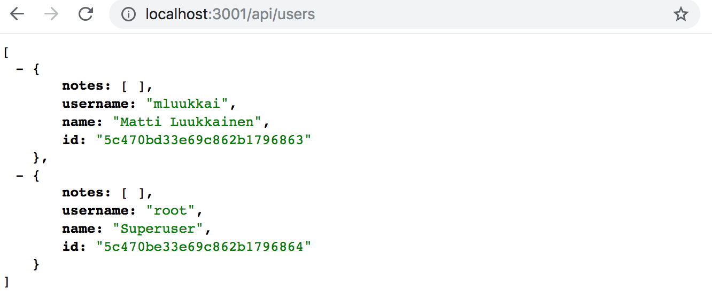
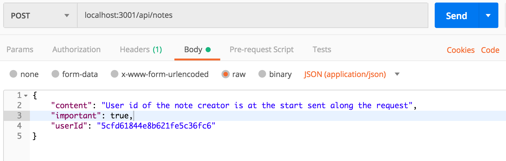
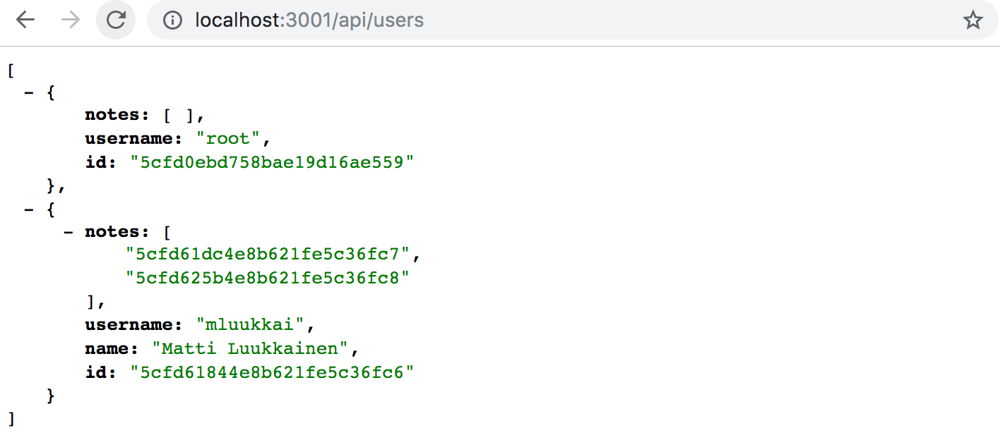
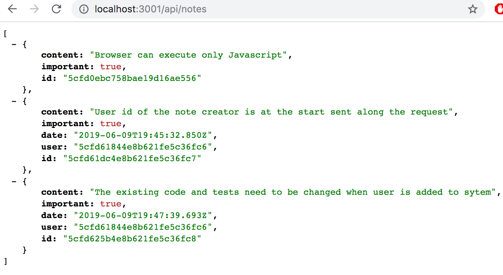
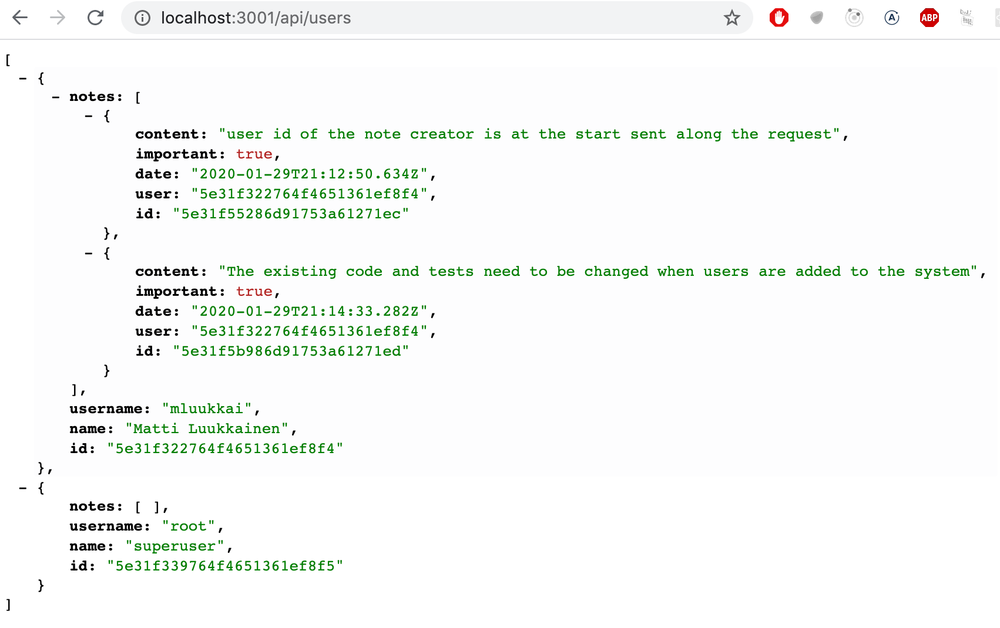
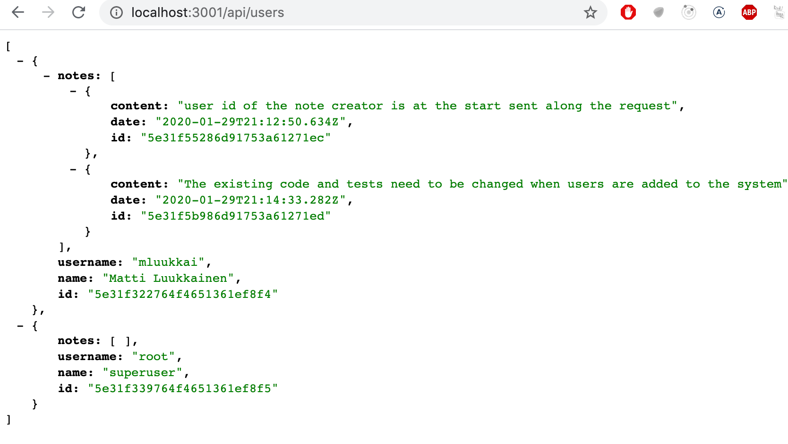
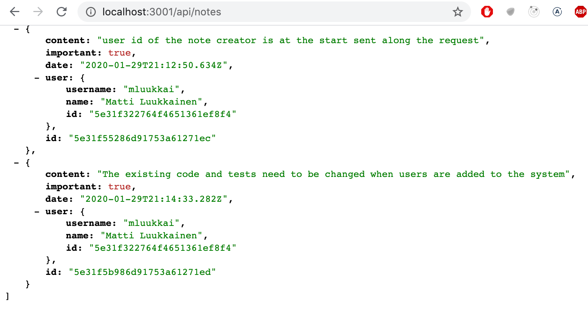

我们想在我们的应用中加入用户认证和授权。用户应该存储在数据库中，每个笔记应该与创建它的用户相联系。删除和编辑一个笔记应该只允许创建它的用户使用。
让我们先把用户的信息添加到数据库中。在用户（User）和笔记（Note）之间有一个一对多的关系。

如果我们使用的是关系型数据库，实现起来就很简单了。这两种资源都有各自独立的数据库表，而创建笔记的用户的ID将作为外键存储在笔记表中。
当使用文档数据库时，情况就有点不同了，因为有许多不同的建模方式。
现有的解决方案将每个笔记保存在数据库的笔记集合中。如果我们不想改变这个现有的集合，那么自然的选择是将用户保存在他们自己的集合中，例如users。
与所有文档数据库一样，我们可以使用Mongo中的对象ID来引用其他集合中的文档。这类似于在关系数据库中使用外键。
传统上，像Mongo这样的文档数据库不支持关系型数据库中的join查询，这些查询用于聚合多个表的数据。但是从3.2版本开始。Mongo已经支持查找聚合查询。我们将不会在本课程中查看此功能。
如果我们需要类似于连接查询的功能，我们将在我们的应用代码中通过进行多次查询来实现它。在某些情况下，Mongoose可以负责连接和聚合数据，这给人以连接查询的感觉。然而，即使在这些情况下，Mongoose也会在后端对数据库进行多次查询。
References across collections
如果我们使用的是关系型数据库，笔记会包含一个参考键，指向创建它的用户。在文档数据库中，我们可以做同样的事情。
我们假设users集合包含两个用户。
[
{
username: 'mluukkai',
_id: 123456,
},
{
username: 'hellas',
_id: 141414,
},
];
notes集合包含三个笔记，它们都有一个user字段，引用users集合中的一个用户。
[
{
content: 'HTML is easy',
important: false,
_id: 221212,
user: 123456,
},
{
content: 'The most important operations of HTTP protocol are GET and POST',
important: true,
_id: 221255,
user: 123456,
},
{
content: 'A proper dinosaur codes with Java',
important: false,
_id: 221244,
user: 141414,
},
]
文档数据库不要求外键存储在注释资源中，它也可以存储在用户集合中，甚至两者兼而有之：
[
{
username: 'mluukkai',
_id: 123456,
notes: [221212, 221255],
},
{
username: 'hellas',
_id: 141414,
notes: [221244],
},
]
由于用户可以有很多笔记，相关的ID被存储在notes字段的数组中。
文档数据库也提供了一种完全不同的组织数据的方式。在某些情况下，将整个笔记数组嵌套为用户集合中的文档的一部分可能是有益的。
[
{
username: 'mluukkai',
_id: 123456,
notes: [
{
content: 'HTML is easy',
important: false,
},
{
content: 'The most important operations of HTTP protocol are GET and POST',
important: true,
},
],
},
{
username: 'hellas',
_id: 141414,
notes: [
{
content:
'A proper dinosaur codes with Java',
important: false,
},
],
},
]
在这种模式下，笔记将被紧密地嵌套在用户之下，数据库不会为它们生成ID。
数据库的结构和模式并不像关系型数据库那样不言自明。所选架构必须最好地支持应用程序的用例。这不是一个简单的设计决策，因为在做出设计决策时，应用程序的所有用例都是未知的。
矛盾的是，像Mongo这样的无模式数据库要求开发人员在项目开始时对数据组织做出比有模式的关系数据库更激进的设计决策。平均而言，关系数据库为许多应用程序提供了一种或多或少合适的数据组织方式。
Mongoose schema for users
在这种情况下，我们决定将用户创建的笔记的ID存储在用户文档中。让我们在models/user.js文件中定义代表一个用户的模型。
const mongoose = require('mongoose')
const userSchema = new mongoose.Schema({
username: String,
name: String,
passwordHash: String,
notes: [
{
type: mongoose.Schema.Types.ObjectId,
ref: 'Note'
}
],
})
userSchema.set('toJSON', {
transform: (document, returnedObject) => {
returnedObject.id = returnedObject._id.toString()
delete returnedObject._id
delete returnedObject.__v
// the passwordHash should not be revealed
delete returnedObject.passwordHash
}
})
const User = mongoose.model('User', userSchema)
module.exports = User
笔记的id以Mongo id数组的形式存储在用户文档中。其定义如下。
{
type: mongoose.Schema.Types.ObjectId,
ref: 'Note'
}
该字段的类型是ObjectId，引用note式文档。Mongo 本身并不知道这是一个引用笔记的字段，这个语法纯粹是与 Mongoose 有关，并由 Mongoose 定义。
让我们扩展models/note.js文件中定义的笔记模式，使笔记包含创建它的用户的信息。
const noteSchema = new mongoose.Schema({
content: {
type: String,
required: true,
minlength: 5
},
important: Boolean,
// highlight-start
user: {
type: mongoose.Schema.Types.ObjectId,
ref: 'User'
}
// highlight-end
})
与关系型数据库的惯例形成鲜明对比的是，引用现在被存储在两个文件中：笔记引用了创建它的用户，而用户有一个数组，引用了他们创建的所有笔记。
Creating users
让我们实现一个创建新用户的路由。用户有一个唯一的用户名、名字和一个叫做密码哈希的东西。密码散列是应用于用户密码的单向散列函数的输出。在数据库中存储未加密的纯文本密码是不明智的!
让我们安装bcrypt软件包来生成密码散列。
npm install bcrypt
创建新的用户是按照第三章节中讨论的RESTful惯例进行的，通过向users路径发出HTTP POST请求。
让我们在一个新的controllers/users.js文件中定义一个单独的router来处理用户。让我们在app.js文件中的应用中使用这个路由器，这样它就可以处理向/api/users网址发出的请求。
const usersRouter = require('./controllers/users')
// ...
app.use('/api/users', usersRouter)
定义路由器的文件的内容如下。
const bcrypt = require('bcrypt')
const usersRouter = require('express').Router()
const User = require('../models/user')
usersRouter.post('/', async (request, response) => {
const { username, name, password } = request.body
const saltRounds = 10
const passwordHash = await bcrypt.hash(password, saltRounds)
const user = new User({
username,
name,
passwordHash,
})
const savedUser = await user.save()
response.status(201).json(savedUser)
})
module.exports = usersRouter
请求中发送的密码不存储在数据库中。我们存储的是用_bcrypt.hash_函数生成的密码的hash。
存储密码的基本原理不在本课程材料的范围之内。我们不会讨论分配给saltRounds变量的神奇数字10是什么意思，但你可以在链接材料中读到更多关于它的信息。
我们目前的代码不包含任何错误处理或输入验证，以验证用户名和密码是否符合所需的格式。
这个新功能最初可以而且应该用像Postman这样的工具来手动测试。然而，手动测试很快就会变得非常麻烦，尤其是当我们实现了强制要求用户名是唯一的功能。
编写自动化测试需要更少的努力，它将使我们的应用的开发更加容易。
我们最初的测试可以是这样的。
const bcrypt = require('bcrypt')
const User = require('../models/user')
//...
describe('when there is initially one user in db', () => {
beforeEach(async () => {
await User.deleteMany({})
const passwordHash = await bcrypt.hash('sekret', 10)
const user = new User({ username: 'root', passwordHash })
await user.save()
})
test('creation succeeds with a fresh username', async () => {
const usersAtStart = await helper.usersInDb()
const newUser = {
username: 'mluukkai',
name: 'Matti Luukkainen',
password: 'salainen',
}
await api
.post('/api/users')
.send(newUser)
.expect(201)
.expect('Content-Type', /application\/json/)
const usersAtEnd = await helper.usersInDb()
assert.strictEqual(usersAtEnd.length, usersAtStart.length + 1)
const usernames = usersAtEnd.map(u => u.username)
assert(usernames.includes(newUser.username))
})
})
测试使用我们在tests/test_helper.js文件中实现的usersInDb()辅助函数。该函数用于帮助我们在创建用户后验证数据库的状态。
const User = require('../models/user')
// ...
const usersInDb = async () => {
const users = await User.find({})
return users.map(u => u.toJSON())
}
module.exports = {
initialNotes,
nonExistingId,
notesInDb,
usersInDb,
}
beforeEach块将一个用户名为root的用户添加到数据库中。我们可以写一个新的测试，验证是否可以创建一个相同用户名的新用户。
describe('when there is initially one user in db', () => {
// ...
test('creation fails with proper statuscode and message if username already taken', async () => {
const usersAtStart = await helper.usersInDb()
const newUser = {
username: 'root',
name: 'Superuser',
password: 'salainen',
}
const result = await api
.post('/api/users')
.send(newUser)
.expect(400)
.expect('Content-Type', /application\/json/)
const usersAtEnd = await helper.usersInDb()
assert(result.body.error.includes('expected `username` to be unique'))
assert.strictEqual(usersAtEnd.length, usersAtStart.length)
})
})
在这一点上，测试案例显然不会通过。我们基本上是在实践测试驱动开发(TDD)，即在功能实现之前编写新功能的测试。
Mongoose 验证没有提供直接的方法来检查字段值的唯一性。但是，可以通过为字段定义 唯一性索引 来实现唯一性。定义如下：
const mongoose = require('mongoose')
const userSchema = mongoose.Schema({
// highlight-start
username: {
type: String,
required: true,
unique: true // this ensures the uniqueness of username
},
// highlight-end
name: String,
passwordHash: String,
notes: [
{
type: mongoose.Schema.Types.ObjectId,
ref: 'Note'
}
],
})
// ...
但是，必须小心使用唯一性索引。如果数据库中已经存在违反唯一性条件的文档，将不会创建索引。因此，在添加唯一性索引时，请确保数据库处于健康状态！上述测试将用户名为 root 的用户两次添加到数据库中，必须删除这些用户才能形成索引并使代码工作。
Mongoose 验证不会检测到索引违规，并且会返回类型为 MongoServerError 的错误，而不是 ValidationError。因此，我们需要为此情况扩展错误处理程序：
const errorHandler = (error, request, response, next) => {
if (error.name === 'CastError') {
return response.status(400).send({ error: 'malformatted id' })
} else if (error.name === 'ValidationError') {
return response.status(400).json({ error: error.message })
// highlight-start
} else if (error.name === 'MongoServerError' && error.message.includes('E11000 duplicate key error')) {
return response.status(400).json({ error: 'expected `username` to be unique' })
}
// highlight-end
next(error)
}
进行这些更改后，测试将通过。
我们还可以在创建用户时实现其他验证。我们可以检查用户名是否足够长，用户名是否只由允许的字符组成，或者密码是否足够强大。实现这些功能是一个可选的练习。
在继续之前，让我们添加一个路由处理程序的初始实现，以返回数据库中所有的用户。
usersRouter.get('/', async (request, response) => {
const users = await User.find({})
response.json(users)
})
在生产或开发环境中创建新用户，你可以通过Postman或REST客户端向/api/users/发送一个POST请求，格式如下。
{
"username": "root",
"name": "Superuser",
"password": "salainen"
}
列表如下所示：

你可以在这个github仓库的part4-7分支中找到我们当前应用的全部代码。
Creating a new note
创建新笔记的代码需要更新，以便将笔记分配给创建它的用户。
让我们扩展我们目前的实现，以便在请求体的userId字段中发送关于创建笔记的用户的信息。
const User = require('../models/user') //highlight-line
//...
notesRouter.post('/', async (request, response) => {
const body = request.body
const user = await User.findById(body.userId) //highlight-line
const note = new Note({
content: body.content,
important: body.important === undefined ? false : body.important,
user: user.id //highlight-line
})
const savedNote = await note.save()
user.notes = user.notes.concat(savedNote._id) //highlight-line
await user.save() //highlight-line
response.status(201).json(savedNote)
})
值得注意的是，user对象也会改变。笔记的id被保存在notes字段中。
const user = await User.findById(body.userId)
// ...
user.notes = user.notes.concat(savedNote._id)
await user.save()
让我们试着创建一个新的笔记

该操作似乎是有效的。让我们再添加一个笔记，然后访问获取所有用户的路径。

我们可以看到，该用户有两个笔记。
同样地，当我们访问获取所有笔记的路线时，可以看到创建笔记的用户的ID。

Populate
我们希望我们的API能够以这样的方式工作，即当HTTP GET请求被发送到/api/users路由时，用户对象也将包含用户的笔记内容，而不仅仅是他们的ID。在一个关系型数据库中，这个功能将通过一个连接查询来实现。
如前所述，文档数据库并不正确支持集合之间的连接查询，但 Mongoose 库可以为我们做一些这样的连接。Mongoose 通过做多个查询来完成连接，这与关系数据库中的连接查询不同，关系数据库是事务性的，意味着数据库的状态在查询期间不会改变。在 Mongoose 的连接查询中，没有任何东西可以保证被连接的集合之间的状态是一致的，这意味着如果我们做一个连接用户和笔记集合的查询，集合的状态可能在查询过程中发生变化。
Mongoose的连接是通过populate方法完成的。让我们先更新返回所有用户的路线。
usersRouter.get('/', async (request, response) => {
const users = await User // highlight-line
.find({}).populate('notes') // highlight-line
response.json(users)
})
populate 方法在初始查询后链接到 find 方法。提供给 populate 方法的参数定义了在user文档的notes字段中引用note对象的ids(id的复数)将被替换为被引用的note文档。
结果几乎正是我们想要的。

我们可以使用populate参数来选择我们想从文档中包含的字段。字段的选择是通过Mongo的语法完成的。
usersRouter.get('/', async (request, response) => {
const users = await User
.find({}).populate('notes', { content: 1, date: 1 })
response.json(users)
});
现在的结果就像我们希望的那样。

让我们在 controllers/notes.js 文件中为笔记添加一个合适的用户详细信息填充：
notesRouter.get('/', async (request, response) => {
const notes = await Note
.find({}).populate('user', { username: 1, name: 1 })
response.json(notes)
});
现在用户的信息被添加到笔记对象的user字段中。

重要的是要明白，数据库并不知道存储在笔记集合的 user 字段中的 id 引用用户集合中的文档。
Mongoose 的 populate 方法的功能基于这样一个事实：我们已经使用 ref 选项为 Mongoose 模式中的引用定义了“类型”：
const noteSchema = new mongoose.Schema({
content: {
type: String,
required: true,
minlength: 5
},
important: Boolean,
user: {
type: mongoose.Schema.Types.ObjectId,
ref: 'User'
}
})
你可以在这个github仓库的part4-8分支中找到我们当前应用的全部代码。
注意：在此阶段，首先，一些测试将失败。我们将把修复测试留作非强制性练习。其次，在已部署的笔记应用程序中，创建笔记功能将停止工作，因为用户尚未链接到前端。